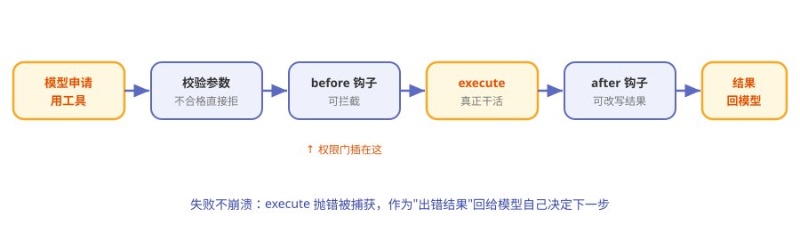

第6章 四只手脚：内置工具与工具执行¶
阅读提示 第 1 章说过 Pi 默认只给模型 4 个工具。本章把这"四只手脚"和执行它们的流水线拆开看。约 8 分钟。
一个只带四件工具上岗的员工¶
想象一位新员工的工位上只放了四件工具：一本书（读）、一支笔（写）、一块橡皮（改）、一个按钮（执行命令）。老板（模型）想用别的？可以，但得自己申请添置，而不是公司预先塞满他的抽屉。
这就是 Pi 的工具哲学：默认极简，需要再加。
一个工具长什么样¶
在 Pi 里，每个工具就是一份标准描述：
表6-1 工具的五个要素
| 要素 | 是什么 | 类比 |
|---|---|---|
| name | 工具名 | 工牌 |
| description | 干什么用（给模型看的） | 岗位说明书 |
| parameters | 参数定义（严格校验） | 表格的必填项 |
| execute | 真正干活的逻辑 | 双手 |
| label | 界面上显示的名字 | 胸牌 |
模型只能看到"说明书"，真正动手的是 execute。参数会先被严格校验，不合格根本轮不到执行。
内置七个，默认开四个¶
Pi 其实定义了 7 个内置工具，但默认只启用 4 个：
表6-2 内置工具清单
| 工具 | 干什么 | 默认开？ |
|---|---|---|
| read | 读文件 | ✅ |
| write | 写新文件 | ✅ |
| edit | 改已有内容 | ✅ |
| bash | 跑命令 | ✅ |
| grep | 搜内容 | ⬜ 按需 |
| find | 找文件 | ⬜ 按需 |
| ls | 列目录 | ⬜ 按需 |
为什么默认就这四个？因为读写改 + 跑命令已经构成了"能干绝大多数活"的最小集，剩下的按场景开，保持精简。
工具执行流水线¶
模型说"我要用某工具"之后，会走一条流水线：

图6-1 工具执行流水线
表6-3 流水线四站
| 站 | 干什么 |
|---|---|
| 校验参数 | 按定义检查，不合格直接拒 |
| beforeToolCall 钩子 | 可拦截、可附理由、可叫停后续 |
| execute 执行 | 真正干活；失败就"抛错"，被捕获后以"出错"结果回给模型 |
| afterToolCall 钩子 | 可改写结果、可追加叫停 |
两个"钩子"就是流水线上可以插进去的检查岗——这也是第 1 章说的"权限弹窗用扩展自己造"的落点：在 beforeToolCall 里拦危险命令，就是一个权限门。
失败不是崩溃，是"告诉模型"¶
工具执行失败时，Pi 不让程序崩掉，而是把失败作为一条"出错"的结果回给模型：
模型看到"这一步失败了，原因是 XX"，然后自己决定是重试、换路子，还是告诉你。
这跟第 4 章"错误编码进流"是同一个思想：异常是信息，不是终点。
快捷跑命令：! 与 !!¶
在交互界面里，你不一定要等模型动手——自己也能直接跑命令：
表6-4 两个快捷符
| 输入 | 效果 |
|---|---|
!命令 |
跑命令，输出发给模型看 |
!!命令 |
跑命令，输出不发给模型（只给你看） |
🧪 本章实验¶
实验 6-1 ★｜认全四只手脚 目标：记住默认四工具。 步骤：不看表，说出 read/write/edit/bash 各干什么。 验收：四个全对。
实验 6-2 ★★｜让 Pi 用工具干件实事 目标：观察完整的"申请→执行→回填"。 步骤：让 Pi 在某个目录新建一个文件并写一句话。 验收：你能说出它用了 write（可能先 read/ls），以及结果怎么回到对话里。
🤔 思考题¶
- ★ 为什么"默认只开四个工具"反而可能是优点？
- ★★ beforeToolCall 能拦截工具，这和"权限系统"是什么关系？
- ★★ 工具失败"回给模型"而不是"直接报错退出"，体现了什么设计观？
📝 小结¶
- 工具 = 一份标准描述——name/description/parameters/execute
- 内置七个、默认开四个——read/write/edit/bash 是最小能干集
- 执行走流水线——校验→before 钩子→执行→after 钩子
- 钩子是权限门的落点——beforeToolCall 可拦截危险操作
- 失败是信息——作为出错结果回给模型，不崩程序
手脚看完了。下一章看记忆——这些对话和工具结果，Pi 都记在哪。➡️ 第7章 对话的记忆：会话树与压缩